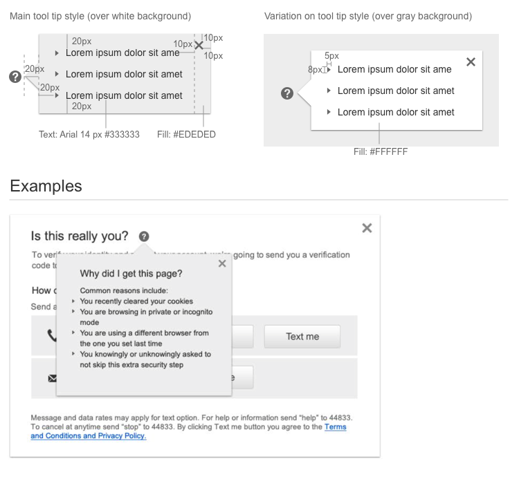

Tooltips
Visual Specifications
A tooltip is used to provide a small amount of mainy explanitory information to the user that is not critical to taking an action on the page.
Do not have users perform actions inside a tooltip.
Use tooltips sparringly as they can cause usability issues on mobile devices.
The tool tip is opened by tapping the icon. The tooltip is closed by either tapping the close corner or by tapping outside the container
There is no tool tip hover state (cannot be accessed using touch hardware).
The tooltip can open in any direction depending on where the target is placed. (In this case the target is the “?” icon.)
The tooltip fill can be gray if it is placed on a white background or white if placed on a gray background.
In the XS screen size, consider making the tooltip a full page as it can cause usability issues on touch devices.

Accessibility
- On close, return focus to the element that activated the tooltip.
- equivalent. If the text equivalent is hidden from view, it must remain available for assistive technology (e.g. using text-indent to move it off screen). If it’s an img element acting as a button, it also needs a ARIA role.
- Tool tips: need ARIA role "tooltip" and "aria-hidden" property. The element a tip pertains to needs the ARIA property "aria-describedby".
- Style hover and focus the same way, so mouse and keyboard-only users receive consistent feedback.
Tool Tip / Pop-over (on click)
<span class="glyphicon glyphicon-asterisk" aria-hidden="true" data-toggle="popover"
data-placement="left | right | bottom | top" data-content="tool tip text">variation (on gray background)
<span class="di-icon-accounts popover-white" aria-hidden="true" data-toggle="popover"
data-placement="left | right | bottom | top" data-content="tool tip text">